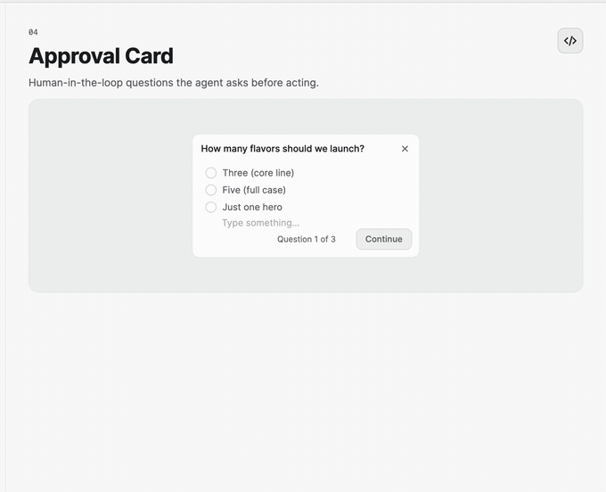
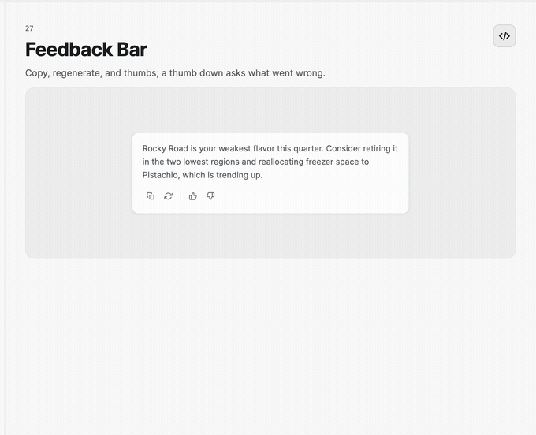

Approval and Feedback
ApprovalCard pauses an agent workflow for one or more explicit decisions. FeedbackBar captures response actions and evaluation after an answer is shown.
Ask for approval
<nova:ApprovalCard ItemsSource="{Binding Questions}"
DraftAnswer="{Binding DraftAnswer}"
SelectedOptionId="{Binding SelectedOptionId}"
AnswerCommand="{Binding SubmitApprovalCommand}"
DismissCommand="{Binding DismissApprovalCommand}" />
Each ApprovalQuestion can provide predefined ApprovalOption values, a risk label, and optional custom-answer support. The card handles question navigation and exposes CurrentIndex, ProgressText, CanGoNext, CanGoPrevious, and CanSubmit for state-aware templates.
Selecting an option by SelectedOptionId also updates DraftAnswer to its label. Clearing the ID clears the selected answer and disables submission until a new answer is supplied. A changed draft updates the selected option to match, or becomes a custom answer when allowed. Submissions reject unknown option IDs and reject custom answers when AllowCustomAnswer="False"; structured submissions always use the selected option's ID and label together.
For a closed approval such as publishing a change, set AllowCustomAnswer="False" and authorize only explicit structured option IDs in the host. Keep custom answers, unknown IDs, and dismissal on the hold path. The Hermes sample keeps the structured answer through its approval gate and applies this policy.
Use AnswerSubmitted, Completed, Dismissed, and ResetRequested routed events when code-behind integration is more convenient. Set CanDismiss="False" for a required decision.

Capture response feedback
<nova:FeedbackBar ResponseId="{Binding ResponseId}"
TurnId="{Binding TurnId}"
Revision="{Binding Revision}"
FeedbackCommand="{Binding SubmitFeedbackCommand}"
ResponseActionCommand="{Binding ResponseActionCommand}" />
The feedback snapshot carries the stable response ID, optional turn ID, and revision so a delayed user action cannot be confused with a newer response. Thumb-down feedback can include a comment. Copy and regenerate have both specific events and a unified ResponseActionRequested event.
Changing the response ID, turn ID, or revision closes and discards a pending comment and resets the submitted state. A comment must be started again for the new response. Reset() also cancels any pending comment.
